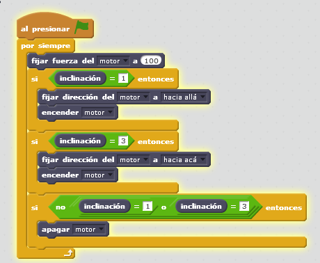
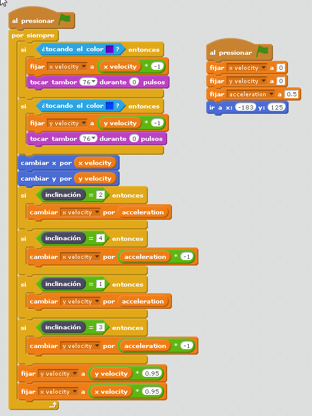

Más del sensor inclinación
Continuamos
Se le puede sacar mucho juego a este sencillo sensor
Propuesta
Desafiando la gravedad
Podemos hacer un coche, con el sensor de inclinación, y según su valor, actúe en contra de la inclinación, es decir que si se le inclina hacia bajo, el coche quiere subir, y al revés:
Idea de Labdocente
Bueno, el coche es diseño casero, sin complicaciones, pues aquí el objetivo es la sencillez en construcción para enfocar nuestra atención en la programación:

La solución tiene que actuar el motor en tres casos:
- Cuando está inclinado hacia abajo, tiene que moverse hacia un sentido
- Cuando está inclinado hacia arriba tiene que moverse hacia el otro sentido
- Cuando no está inclinado hacia arriba o hacia abajo tiene que estar quieto

Aquí si te lo quieres descargar (sb2 - 54.02 KB).
Propuesta
El siguiente programa es muy avanzado, pero nos da idea de las posibilidades del sensor de inclinación Lego WeDo
En el siguiente enlace o bien en este archivo (sb2 - 82651 B).

El programa principal lo tiene la pelota que interactua con el laberinto de color azul, luego según el sensor de inclinación y según toque el color azul, cambia los valores de velocidad:  %/accordion%